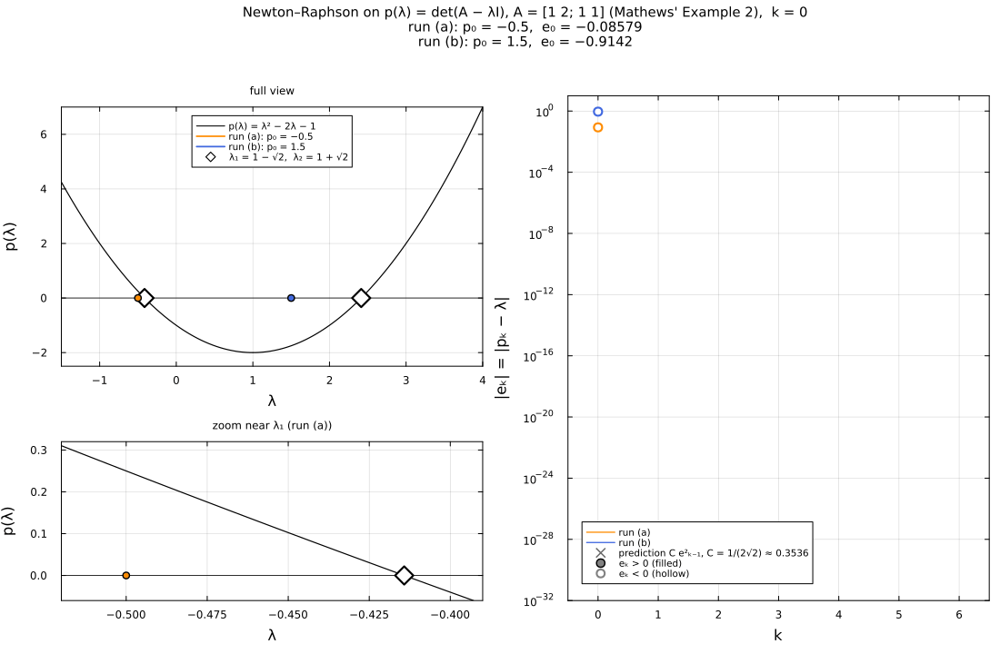
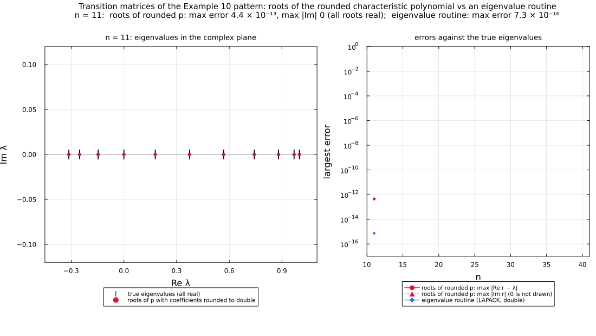

Eigenvalues and Eigenvectors
Source inspiration: (Mathew 2000-2019).
Description
An eigenpair of a square matrix \(\mathbf{A}\) is a number \(\lambda\) and a nonzero vector \(\mathbf{X}\) with \(\mathbf{A}\mathbf{X} = \lambda\mathbf{X}\): the linear map \(\mathbf{X} \mapsto \mathbf{A}\mathbf{X}\) only stretches, shrinks or reverses \(\mathbf{X}\). Rewritten as \((\mathbf{A} - \lambda\mathbf{I})\mathbf{X} = \mathbf{0}\), this is a homogeneous linear system, and it has a nonzero solution exactly when its matrix is singular. So the eigenvalues are the roots of the characteristic polynomial
\[ p(\lambda) = \det(\mathbf{A} - \lambda\mathbf{I}), \]
a polynomial of degree \(n\) for an \(n \times n\) matrix, and the eigenvectors for each root \(\lambda_j\) are the nonzero solutions of \((\mathbf{A} - \lambda_j\mathbf{I})\mathbf{X} = \mathbf{0}\), found by reducing that matrix to row reduced echelon form and choosing values for its free variables.
This is the direct method that Mathews’ module works through, on a sequence of examples that starts at \(2 \times 2\) and reaches \(11 \times 11\) in Example 10. For small matrices built to have simple eigenvalues the roots of \(p\) can be found exactly. Otherwise they are found numerically, for example by the Newton–Raphson iteration \(\lambda_{k+1} = \lambda_k - p(\lambda_k)/p'(\lambda_k)\) that Mathews runs in Example 2. The module ends (Examples 10 and 11) by comparing roots of the characteristic polynomial with the answers of a dedicated eigenvalue routine, and for larger matrices the roots can be badly wrong. That is why eigenvalues are normally computed by methods that never form \(p(\lambda)\) (the power method, Jacobi’s method, the QR method). A last section of this page shows, on the matrix of Example 2, how the eigenvalues govern the sequence \(\mathbf{A}^j\mathbf{X}_0\), which is the idea behind the power method.
Animations
The first three animations use the \(2 \times 2\) matrix \(\mathbf{A} = \begin{pmatrix} 1 & 2 \\ 1 & 1 \end{pmatrix}\) of Example 2, with eigenpairs \(\lambda_1 = 1 - \sqrt2\), \(\mathbf{V}_1 = (\sqrt2, -1)\) and \(\lambda_2 = 1 + \sqrt2\), \(\mathbf{V}_2 = (\sqrt2, 1)\). Case 1 shows what an eigenvector is geometrically, Case 2 follows the powers \(\mathbf{A}^j\mathbf{X}_0\) of the last section of this page, and Case 3 animates Mathews’ two Newton–Raphson runs on the characteristic polynomial. Case 4 animates the root-sensitivity computation of the Example 11 section on the transition matrices of Example 10’s pattern for \(n = 11, \ldots, 40\); its first frame, \(n = 11\), is Example 10. Cases 2 and 3 compute in exact rational arithmetic, and their log-scale panels show filled markers for positive errors and hollow markers for negative ones.
All four animations are new. Mathews’ Eigenvalues and Eigenvectors module has no animation, and the archive of his animations has none for eigenvalue problems. Not animated are the homogeneous system of Example 1, the eigenvectors found by row reduction and free variables in Examples 2–9 with their checks and comparisons with Mathematica’s Eigensystem, the complex eigenvalues of Examples 5 and 6, the larger matrices of Examples 3, 4 and 6–9, and Mathews’ Newton–Raphson run on the cubic of Example 3, whose output the archive does not preserve.
Julia source scripts that generated these animations are linked under each case.
Case 1 — Eigenvectors as invariant directions: \(\mathbf{X} = (\cos t, \sin t)\) and \(\mathbf{A}\mathbf{X}\) for \(t = 0^\circ\) to \(352.5^\circ\)
Behavior: As \(\mathbf{X}\) goes once around the unit circle in steps of \(7.5^\circ\), the tip of \(\mathbf{A}\mathbf{X}\) goes once around the ellipse \(\mathbf{A}(\text{unit circle})\), whose semi-axes are \((3 \pm \sqrt5)/2 \approx 2.618\) and \(0.3820\). \(\mathbf{X}\) and \(\mathbf{A}\mathbf{X}\) lie on one line through the origin at exactly four angles, \(t = 35.26^\circ\), \(144.74^\circ\), \(215.26^\circ\) and \(324.74^\circ\), which are added to the steps and held for four frames each. There \(\mathbf{X}\) points along \(\pm\mathbf{V}_2\), and \(\mathbf{A}\mathbf{X} = 2.414\,\mathbf{X}\) is stretched in the same direction, or along \(\pm\mathbf{V}_1\), and \(\mathbf{A}\mathbf{X} = -0.4142\,\mathbf{X}\) is reversed and shortened. These angles are the zeros of \(\det[\mathbf{X}, \mathbf{A}\mathbf{X}] = \cos^2 t - 2\sin^2 t = 1 - 3\sin^2 t\) in the right panel. It is positive (\(\mathbf{A}\mathbf{X}\) turned counterclockwise from \(\mathbf{X}\)) within \(35.26^\circ\) of \(t = 0^\circ\) and \(t = 180^\circ\), and negative (\(\mathbf{A}\mathbf{X}\) turned clockwise from \(\mathbf{X}\)) at the other angles. The matrix is not symmetric, so its eigenvectors are not perpendicular (they meet at \(70.53^\circ\)) and are not the axes of the ellipse, whose major axis is at \(31.72^\circ\). The first frame, \(\mathbf{X} = (1, 0)\) and \(\mathbf{A}\mathbf{X} = (1, 1)\), is the first step of Case 2.

Case 2 — The scaled powers \(\mathbf{X}_k = \mathbf{A}\mathbf{X}_{k-1}/c_k\) from \(\mathbf{X}_0 = (1, 0)\), \(k = 0, \ldots, 10\)
Behavior: Each frame splits \(\mathbf{X}_k = (1, x_k)\) into its components \(a_k\mathbf{V}_1 + b_k\mathbf{V}_2\) along the eigenvectors (dotted parallelogram), starting from \(a_0 = b_0 = 1/(2\sqrt2) \approx 0.3536\). Multiplication by \(\mathbf{A}\) multiplies the \(\mathbf{V}_1\) component by \(\lambda_1 \approx -0.4142\) and the \(\mathbf{V}_2\) component by \(\lambda_2 \approx 2.414\). After scaling, \(a_k = -e_k/2\) changes sign and shrinks at every step, and \(\mathbf{X}_k\) turns onto the eigenvector line of \(\mathbf{V}_2\), its tip \((1, x_k)\) jumping from one side of the line to the other: \(x_k = 0, 1, \tfrac23, \tfrac57, \tfrac{12}{17}, \ldots\). From \(k = 3\) on, \(a_k\mathbf{V}_1\) is shorter than \(0.0063\) and is no longer drawn, and \(\mathbf{X}_k\) can hardly be told from the eigenvector line. The right panel follows the error further. \(|e_k| = |x_k - 1/\sqrt2|\) decreases at every step while its sign alternates, and its line runs parallel to the grey dashed line of slope \(|\lambda_1/\lambda_2| = 3 - 2\sqrt2 \approx 0.1716\); the measured ratio \(e_k/e_{k-1}\) is within \(2 \times 10^{-4}\) of \(\lambda_1/\lambda_2 = -0.171573\) from \(k = 5\) on. Because \(c_k = 1 + 2x_{k-1}\), the eigenvalue error is exactly \(c_k - \lambda_2 = 2e_{k-1}\): its line is the line of \(|e_k|\) moved one step to the right and up by a factor \(2\), and it ends at \(|c_{10} - \lambda_2| = 3.644 \times 10^{-7}\), against \(|e_{10}| = 3.126 \times 10^{-8}\).

Case 3 — Newton–Raphson on \(p(\lambda) = \lambda^2 - 2\lambda - 1\) (Example 2), \(p_0 = -0.5\) (4 steps) and \(p_0 = 1.5\) (6 steps)
Behavior: Each frame takes one step of both of Mathews’ runs (run (a) stops after four): a vertical line to the curve, then the tangent line back to the axis. Run (a) approaches \(\lambda_1\) from below. Its first step, from \(-0.5\) to \(-\tfrac{5}{12}\), is short at the scale of the full view and is shown again in the zoomed lower panel; its later steps are shorter than \(0.0025\). In run (b) the tangent at \(1.5\), where \(p'(1.5) = 1\), overshoots to \(3.25\). After that the iterates decrease toward \(\lambda_2\) from above, and from \(p_3\) on they sit on \(\lambda_2\) at the scale of the full view. The right panel shows \(|e_k|\) on a log scale, where both lines bend down more steeply at every step: the number of correct digits roughly doubles per step once the iterates are close. The grey crosses mark the quadratic-convergence prediction \(C e_{k-1}^2\) with \(C = 1/(2\sqrt2) \approx 0.3536\). They are within \(7\%\) of the measured error at every step of run (a) and within \(11\%\) from \(k = 3\) on in run (b), but far from its first two errors (\(0.2955\) predicted against \(0.8358\), and \(0.2470\) against \(0.1552\)). The title shows \(e_k/e_{k-1}^2\) settling at \(-0.3536\) in run (a) and \(+0.3536\) in run (b); the last errors are \(-8.993 \times 10^{-25}\) at \(k = 4\) and \(8.151 \times 10^{-21}\) at \(k = 6\).

Case 4 — Roots of the rounded characteristic polynomial against an eigenvalue routine, Example 10’s pattern for \(n = 11, \ldots, 40\)
Behavior: For each \(n\), the left panel places the roots of the characteristic polynomial of the \(n \times n\) matrix, with its exact coefficients rounded to double precision and the roots then found in 512-bit arithmetic, against the true eigenvalues (black ticks, all real), so that the only error is the rounding of the coefficients. The right panel collects the largest errors, measured as in the table of the Example 11 section below (both lists sorted by real part, error in the real part, imaginary parts separately). The largest root error grows from \(4.4 \times 10^{-13}\) at \(n = 11\) to \(0.056\) at \(n = 40\), though not at every step: it falls from \(n = 17\) to \(18\), \(19\) to \(20\), \(25\) to \(26\), \(31\) to \(32\) and \(35\) to \(36\). Up to \(n = 28\) every root is real. At \(n = 29\) the first complex pair appears, with imaginary part \(0.0037\), and at \(n = 40\) ten roots, with real parts between \(0.78\) and \(1.04\), are off the real axis, with imaginary parts up to \(0.10\). The eigenvalue routine (Julia’s eigvals, which calls LAPACK, on the double-precision matrix) stays between \(6 \times 10^{-16}\) and \(3.8 \times 10^{-15}\) for every \(n\). These errors are not exactly the table’s (for example \(2.4 \times 10^{-15}\) against \(1.2 \times 10^{-15}\) at \(n = 40\)), which were computed with NumPy’s build of LAPACK, but both are at the level of rounding error.

Homogeneous Linear Systems
A system of \(n\) linear equations in \(n\) unknowns is homogeneous when every right-hand side is zero:
\[ \begin{aligned} a_{11}x_1 + a_{12}x_2 + \cdots + a_{1n}x_n &= 0 \\ a_{21}x_1 + a_{22}x_2 + \cdots + a_{2n}x_n &= 0 \\ &\ \ \vdots \\ a_{n1}x_1 + a_{n2}x_2 + \cdots + a_{nn}x_n &= 0, \end{aligned} \]
or \(\mathbf{A}\mathbf{X} = \mathbf{0}\). It always has the trivial solution \(x_1 = x_2 = \cdots = x_n = 0\).
If \(\det(\mathbf{A}) \neq 0\), the only solution of \(\mathbf{A}\mathbf{X} = \mathbf{0}\) is the trivial solution \(\mathbf{X} = \mathbf{0}\). If \(\det(\mathbf{A}) = 0\), there are nontrivial solutions \(\mathbf{X} \neq \mathbf{0}\).
When \(\det(\mathbf{A}) = 0\), Gaussian elimination reduces the system to fewer independent equations than unknowns. The unknowns without a pivot are free variables; giving them values (a parameter \(t\), say) and solving for the rest gives the nontrivial solutions.
Example 1 — A singular \(3 \times 3\) homogeneous system
Find the nontrivial solutions of
\[ \begin{aligned} x_1 + 2x_2 - x_3 &= 0 \\ 2x_1 + x_2 + x_3 &= 0 \\ 5x_1 + 4x_2 + x_3 &= 0. \end{aligned} \]
Step 1 (eliminate \(x_1\)): subtract \(2\) times row 1 from row 2 and \(5\) times row 1 from row 3:
\[ \begin{aligned} x_1 + 2x_2 - x_3 &= 0 \\ -3x_2 + 3x_3 &= 0 \\ -6x_2 + 6x_3 &= 0. \end{aligned} \]
Step 2: the third equation is \(2\) times the second, so only two equations in three unknowns remain. The reduced row echelon form of the coefficient matrix is
\[ \begin{pmatrix} 1 & 0 & 1 \\ 0 & 1 & -1 \\ 0 & 0 & 0 \end{pmatrix}, \qquad\text{that is}\qquad x_1 + x_3 = 0, \quad x_2 - x_3 = 0 . \]
Step 3: \(x_3\) has no pivot, so it is the free variable. Set \(x_3 = t\); then \(x_2 = t\) and \(x_1 = -t\):
\[ \boxed{\ \mathbf{X} = t\begin{pmatrix} -1 \\ 1 \\ 1 \end{pmatrix}, \qquad t \neq 0.\ } \]
Verification: the determinant of the coefficient matrix is \(0\), and with \(t = 1\),
| Row | Left-hand side | Right-hand side |
|---|---|---|
| 1 | \((-1) + 2(1) - (1) = 0\) | \(0\) \(\checkmark\) |
| 2 | \(2(-1) + (1) + (1) = 0\) | \(0\) \(\checkmark\) |
| 3 | \(5(-1) + 4(1) + (1) = 0\) | \(0\) \(\checkmark\) |
Linear Independence and Bases
The vectors \(\mathbf{U}_1, \mathbf{U}_2, \ldots, \mathbf{U}_m\) are linearly independent if
\[ c_1\mathbf{U}_1 + c_2\mathbf{U}_2 + \cdots + c_m\mathbf{U}_m = \mathbf{0} \]
implies \(c_1 = c_2 = \cdots = c_m = 0\). They are linearly dependent if there are numbers \(c_1, \ldots, c_m\), not all zero, for which the combination is \(\mathbf{0}\).
Two vectors in \(\mathbb{R}^2\) are linearly independent if and only if they are not parallel; three vectors in \(\mathbb{R}^3\) are linearly independent if and only if they do not lie in one plane.
The vectors \(\mathbf{U}_1, \ldots, \mathbf{U}_m\) are linearly dependent if and only if at least one of them is a linear combination of the others.
A set \(S = \{\mathbf{U}_1, \ldots, \mathbf{U}_m\}\) of vectors in \(\mathbb{R}^n\) is a basis of \(\mathbb{R}^n\) if every vector \(\mathbf{X} \in \mathbb{R}^n\) can be written in exactly one way as
\[ \mathbf{X} = c_1\mathbf{U}_1 + c_2\mathbf{U}_2 + \cdots + c_m\mathbf{U}_m . \]
- In \(\mathbb{R}^n\), any set of \(n\) linearly independent vectors is a basis, and every vector is a unique linear combination of the basis vectors.
- Let \(\mathbf{K}_1, \ldots, \mathbf{K}_m\) be vectors in \(\mathbb{R}^n\). If \(m > n\), the vectors are linearly dependent. If \(m = n\), they are linearly dependent if and only if \(\det(\mathbf{K}) = 0\), where \(\mathbf{K} = [\mathbf{K}_1, \mathbf{K}_2, \ldots, \mathbf{K}_m]\) is the matrix with these columns.
Mathews’ statement of part 2 reads “if \(m > n\), then the vectors are linearly independent”; that is a slip. More than \(n\) vectors in \(\mathbb{R}^n\) are always dependent, as stated above.
Eigenvalues and Eigenvectors
Let \(\mathbf{A}\) be an \(n \times n\) matrix. The product \(\mathbf{Y} = \mathbf{A}\mathbf{X}\) is a linear transformation of \(n\)-dimensional space into itself. We look for scalars \(\lambda\) for which there is a nonzero vector \(\mathbf{X}\) with
\[ \mathbf{A}\mathbf{X} = \lambda\mathbf{X}, \tag{1} \]
so that the transformation maps \(\mathbf{X}\) onto a multiple of itself. In general \(\lambda\) and \(\mathbf{X}\) can be complex, even when \(\mathbf{A}\) is real (Examples 5 and 6). With the \(n \times n\) identity matrix \(\mathbf{I}\), equation (1) becomes
\[ (\mathbf{A} - \lambda\mathbf{I})\,\mathbf{X} = \mathbf{0}. \tag{2} \]
By the theorem on homogeneous systems, (2) has a nontrivial solution if and only if \(\mathbf{A} - \lambda\mathbf{I}\) is singular:
\[ \det(\mathbf{A} - \lambda\mathbf{I}) = 0, \tag{3} \]
that is,
\[ \begin{vmatrix} a_{11} - \lambda & a_{12} & \cdots & a_{1n} \\ a_{21} & a_{22} - \lambda & \cdots & a_{2n} \\ \vdots & \vdots & \ddots & \vdots \\ a_{n1} & a_{n2} & \cdots & a_{nn} - \lambda \end{vmatrix} = 0 . \tag{4} \]
Expanding the determinant in (4) gives a polynomial of degree \(n\), the characteristic polynomial of \(\mathbf{A}\):
\[ p(\lambda) = \det(\mathbf{A} - \lambda\mathbf{I}) = (-1)^n\bigl(\lambda^n + c_1\lambda^{n-1} + c_2\lambda^{n-2} + \cdots + c_{n-1}\lambda + c_n\bigr). \tag{5} \]
A polynomial of degree \(n\) has exactly \(n\) roots, counted with multiplicity and possibly complex. Each root, substituted into (2), gives an underdetermined system with a nontrivial solution; when the root is real, a real eigenvector can be found.
If \(\mathbf{A}\) is an \(n \times n\) real matrix, its \(n\) eigenvalues \(\lambda_1, \lambda_2, \ldots, \lambda_n\) are the real and complex roots of \(p(\lambda) = \det(\mathbf{A} - \lambda\mathbf{I})\). If \(\lambda\) is an eigenvalue and the nonzero vector \(\mathbf{V}\) satisfies \(\mathbf{A}\mathbf{V} = \lambda\mathbf{V}\), then \(\mathbf{V}\) is an eigenvector corresponding to \(\lambda\), and \((\lambda, \mathbf{V})\) is an eigenpair.
Any nonzero multiple of an eigenvector is again an eigenvector, so eigenvectors are only determined up to a factor; the examples below scale them to look simple, and Mathematica’s numerical routine scales them to length \(1\).
If the distinct eigenvalues are \(\lambda_1, \ldots, \lambda_k\), the characteristic polynomial factors as
\[ p(\lambda) = (-1)^n(\lambda - \lambda_1)^{m_1}(\lambda - \lambda_2)^{m_2}\cdots(\lambda - \lambda_k)^{m_k}, \]
and \(m_j\) is the multiplicity of \(\lambda_j\). The multiplicities add up to the size of the matrix: \(m_1 + m_2 + \cdots + m_k = n\).
Let \(\mathbf{A}\) be an \(n \times n\) matrix.
- Corresponding eigenvectors. For each distinct eigenvalue \(\lambda\) there is at least one eigenvector \(\mathbf{V}\). If \(\lambda\) has multiplicity \(r\), there are at most \(r\) linearly independent eigenvectors corresponding to \(\lambda\).
- Linearly independent eigenvectors. If \(\lambda_1, \ldots, \lambda_k\) are distinct eigenvalues and \((\lambda_1, \mathbf{V}_1), \ldots, (\lambda_k, \mathbf{V}_k)\) are eigenpairs, then \(\{\mathbf{V}_1, \ldots, \mathbf{V}_k\}\) is a set of \(k\) linearly independent vectors.
- Complete set of eigenvectors. If the \(n\) eigenvalues of \(\mathbf{A}\) are all distinct, there are \(n\) linearly independent eigenvectors \(\mathbf{V}_1, \ldots, \mathbf{V}_n\).
A repeated eigenvalue may or may not have as many independent eigenvectors as its multiplicity; Example 4 is a case where it does.
Finding eigenpairs by hand
- Expand \(p(\lambda) = \det(\mathbf{A} - \lambda\mathbf{I})\) and find its roots, exactly or numerically.
- Substitute an eigenvalue \(\lambda_j\) of multiplicity \(r\) into \((\mathbf{A} - \lambda_j\mathbf{I})\mathbf{X} = \mathbf{0}\) and reduce the matrix to row reduced echelon form. It has \(n - k\) nonzero rows, where \(1 \le k \le r\), so there are \(k\) free variables.
- Choose the free variables (one equal to \(1\) and the others \(0\), in turn, or a common factor that clears fractions) to obtain \(k\) linearly independent eigenvectors for \(\lambda_j\).
- Check each pair by computing \(\mathbf{A}\mathbf{V}\) and \(\lambda\mathbf{V}\).
Mathews automates these steps in Mathematica: one routine forms and solves \(p(\lambda)\), and a second inserts the free variables at the right places in the row reduced matrix and row reduces again, so that the eigenvector can be read off its last column. In each example he then checks every eigenpair and compares the result with Mathematica’s built-in Eigensystem.
Worked Examples
Example 2 — A \(2 \times 2\) matrix
Find the eigenvalues and eigenvectors of
\[ \mathbf{A} = \begin{pmatrix} 1 & 2 \\ 1 & 1 \end{pmatrix}. \]
Step 1 (characteristic polynomial):
\[ p(\lambda) = \begin{vmatrix} 1 - \lambda & 2 \\ 1 & 1 - \lambda \end{vmatrix} = (1 - \lambda)^2 - 2 = \lambda^2 - 2\lambda - 1 . \]
Step 2 (eigenvalues): by the quadratic formula,
\[ \lambda_1 = 1 - \sqrt{2} \approx -0.4142135624, \qquad \lambda_2 = 1 + \sqrt{2} \approx 2.414213562 . \]
Step 3 (eigenvector for \(\lambda_1\)): \(\mathbf{A} - \lambda_1\mathbf{I} = \begin{pmatrix} \sqrt2 & 2 \\ 1 & \sqrt2 \end{pmatrix}\) has row reduced echelon form \(\begin{pmatrix} 1 & \sqrt2 \\ 0 & 0 \end{pmatrix}\), the single equation \(x_1 + \sqrt2\,x_2 = 0\). Setting \(x_2 = -1\) gives \(x_1 = \sqrt2\).
Step 4 (eigenvector for \(\lambda_2\)): the reduced equation is \(x_1 - \sqrt2\,x_2 = 0\); setting \(x_2 = 1\) gives \(x_1 = \sqrt2\).
\[ \boxed{\ \lambda_1 = 1 - \sqrt2,\ \ \mathbf{V}_1 = \begin{pmatrix} \sqrt2 \\ -1 \end{pmatrix}; \qquad \lambda_2 = 1 + \sqrt2,\ \ \mathbf{V}_2 = \begin{pmatrix} \sqrt2 \\ 1 \end{pmatrix}\ } \]
Verification:
\[ \mathbf{A}\mathbf{V}_1 = \begin{pmatrix} \sqrt2 - 2 \\ \sqrt2 - 1 \end{pmatrix} = (1 - \sqrt2)\begin{pmatrix} \sqrt2 \\ -1 \end{pmatrix}, \qquad \mathbf{A}\mathbf{V}_2 = \begin{pmatrix} \sqrt2 + 2 \\ \sqrt2 + 1 \end{pmatrix} = (1 + \sqrt2)\begin{pmatrix} \sqrt2 \\ 1 \end{pmatrix}. \ \checkmark \]
Newton–Raphson on the characteristic polynomial
Mathews remarks that a root-finding method can produce the eigenvalues when \(p(\lambda)\) cannot be solved by formula, and runs Newton–Raphson on \(p(\lambda) = \lambda^2 - 2\lambda - 1\), with \(p'(\lambda) = 2\lambda - 2\):
\[ p_{k+1} = p_k - \frac{p(p_k)}{p'(p_k)} = p_k - \frac{p_k^2 - 2p_k - 1}{2p_k - 2}. \tag{6} \]
He starts at \(p_0 = -0.5\) for \(\lambda_1\) (4 iterations) and at \(p_0 = 1.5\) for \(\lambda_2\) (6 iterations). The tables below were recomputed in 50-digit arithmetic; \(p_k\) is rounded to 16 significant digits, and the error is \(e_k = p_k - \lambda\). The first steps are exact fractions: \(p_1 = -\tfrac{5}{12}\), \(p_2 = -\tfrac{169}{408}\) in the first run and \(p_1 = \tfrac{13}{4}\), \(p_2 = \tfrac{185}{72}\) in the second.
Run (a): \(p_0 = -0.5\), converging to \(\lambda_1 = 1 - \sqrt2 = -0.4142135623730950\ldots\)
| \(k\) | \(p_k\) | \(p(p_k)\) | \(e_k = p_k - \lambda_1\) | \(e_k / e_{k-1}^2\) |
|---|---|---|---|---|
| 0 | \(-0.5\) | \(0.25\) | \(-0.08579\) | — |
| 1 | \(-0.4166666666666667\) | \(0.006944\) | \(-0.002453\) | \(-0.3333\) |
| 2 | \(-0.4142156862745098\) | \(6.007 \times 10^{-6}\) | \(-2.124 \times 10^{-6}\) | \(-0.3529\) |
| 3 | \(-0.4142135623746899\) | \(4.511 \times 10^{-12}\) | \(-1.595 \times 10^{-12}\) | \(-0.3536\) |
| 4 | \(-0.4142135623730950\) | \(2.544 \times 10^{-24}\) | \(-8.993 \times 10^{-25}\) | \(-0.3536\) |
Run (b): \(p_0 = 1.5\), converging to \(\lambda_2 = 1 + \sqrt2 = 2.414213562373095\ldots\)
| \(k\) | \(p_k\) | \(p(p_k)\) | \(e_k = p_k - \lambda_2\) | \(e_k / e_{k-1}^2\) |
|---|---|---|---|---|
| 0 | \(1.5\) | \(-1.75\) | \(-0.9142\) | — |
| 1 | \(3.25\) | \(3.0625\) | \(0.8358\) | \(1.000\) |
| 2 | \(2.569444444444444\) | \(0.4632\) | \(0.1552\) | \(0.2222\) |
| 3 | \(2.421890363815143\) | \(0.02177\) | \(0.007677\) | \(0.3186\) |
| 4 | \(2.414234285940073\) | \(5.862 \times 10^{-5}\) | \(2.072 \times 10^{-5}\) | \(0.3516\) |
| 5 | \(2.414213562524932\) | \(4.295 \times 10^{-10}\) | \(1.518 \times 10^{-10}\) | \(0.3535\) |
| 6 | \(2.414213562373095\) | \(2.305 \times 10^{-20}\) | \(8.151 \times 10^{-21}\) | \(0.3536\) |
In run (a) every iterate lies below \(\lambda_1\) and increases toward it. In run (b) the first step overshoots, because \(p'(1.5) = 1\) is small, from \(1.5\) to \(3.25\); from then on every iterate lies above \(\lambda_2\) and decreases toward it. Both runs converge quadratically: the ratio \(e_k/e_{k-1}^2\) settles at \(p''(\lambda)/(2p'(\lambda))\), which is \(2/(2 \cdot (-2\sqrt2)) = -1/(2\sqrt2) \approx -0.3536\) at \(\lambda_1\) (every error of run (a) is negative) and \(+1/(2\sqrt2) \approx 0.3536\) at \(\lambda_2\), the same size at both roots because \(|p'(\lambda_1)| = |p'(\lambda_2)| = 2\sqrt2\). Once the iterates are close, the number of correct digits roughly doubles at each step.
Mathews computed in double precision and prints about 16 digits; his iterates agree with these except in the last digit or two, where machine rounding enters (for example he prints \(p_3 = 2.4218903638151420\) in run (b)). His residuals for the last iterates, \(p(p_4) = -2.78 \times 10^{-17}\) in run (a) and \(p(p_6) = 0\) in run (b), are what \(-1 - 2x + x^2\) gives in double-precision arithmetic (reproduced exactly here); in exact arithmetic the residuals are the positive values \(2.5 \times 10^{-24}\) and \(2.3 \times 10^{-20}\) in the tables. Both final iterates round to the correct double-precision eigenvalues, \(-0.4142135623730950\) and \(2.414213562373095\).
Example 3 — Three distinct real eigenvalues
Find the eigenvalues and eigenvectors of
\[ \mathbf{A} = \begin{pmatrix} 2 & -1 & 1 \\ -1 & 2 & 1 \\ 1 & -1 & 2 \end{pmatrix}. \]
Step 1 (characteristic polynomial):
\[ p(\lambda) = -\lambda^3 + 6\lambda^2 - 11\lambda + 6 = -(\lambda - 1)(\lambda - 2)(\lambda - 3), \]
so \(\lambda_1 = 1\), \(\lambda_2 = 2\), \(\lambda_3 = 3\). Mathews notes that this example was “cooked up” so that the roots are simple, and that a root-finding method such as Newton–Raphson would be needed in general; he plots \(p(\lambda)\) and applies Newton–Raphson to it, but the archive does not preserve that output.
Step 2 (eigenvectors): the row reduced echelon forms of \(\mathbf{A} - \lambda_j\mathbf{I}\) and the eigenvectors obtained by setting the free variable to \(1\) are
\[ \begin{aligned} \lambda_1 = 1&: \begin{pmatrix} 1 & -1 & 0 \\ 0 & 0 & 1 \\ 0 & 0 & 0 \end{pmatrix}, & x_1 = x_2,\ x_3 = 0 &\ \Rightarrow\ \mathbf{V}_1 = \begin{pmatrix} 1 \\ 1 \\ 0 \end{pmatrix}, \\ \lambda_2 = 2&: \begin{pmatrix} 1 & 0 & -1 \\ 0 & 1 & -1 \\ 0 & 0 & 0 \end{pmatrix}, & x_1 = x_2 = x_3 &\ \Rightarrow\ \mathbf{V}_2 = \begin{pmatrix} 1 \\ 1 \\ 1 \end{pmatrix}, \\ \lambda_3 = 3&: \begin{pmatrix} 1 & 0 & -1 \\ 0 & 1 & 0 \\ 0 & 0 & 0 \end{pmatrix}, & x_1 = x_3,\ x_2 = 0 &\ \Rightarrow\ \mathbf{V}_3 = \begin{pmatrix} 1 \\ 0 \\ 1 \end{pmatrix}. \end{aligned} \]
Verification: \(\mathbf{A}\mathbf{V}_1 = (1, 1, 0)^T = 1\cdot\mathbf{V}_1\), \(\ \mathbf{A}\mathbf{V}_2 = (2, 2, 2)^T = 2\mathbf{V}_2\), \(\ \mathbf{A}\mathbf{V}_3 = (3, 0, 3)^T = 3\mathbf{V}_3\) \(\checkmark\). The eigenvalues are distinct, so by the theorem the three eigenvectors are linearly independent.
Example 4 — A repeated eigenvalue with two eigenvectors
Find the eigenvalues and eigenvectors of
\[ \mathbf{A} = \begin{pmatrix} 2 & -1 & 1 \\ -1 & 2 & -1 \\ 1 & -1 & 2 \end{pmatrix}. \]
Step 1: \(p(\lambda) = -\lambda^3 + 6\lambda^2 - 9\lambda + 4 = -(\lambda - 1)^2(\lambda - 4)\). The eigenvalue \(\lambda = 1\) has multiplicity \(2\) and \(\lambda = 4\) has multiplicity \(1\).
Step 2 (\(\lambda = 1\)): every row of \(\mathbf{A} - \mathbf{I}\) is a multiple of \((1, -1, 1)\), so its row reduced echelon form has the single nonzero row \((1, -1, 1)\), the equation \(x_1 - x_2 + x_3 = 0\). There are two free variables, \(x_2 = s\) and \(x_3 = t\), and
\[ \mathbf{W} = \begin{pmatrix} s - t \\ s \\ t \end{pmatrix} = s\begin{pmatrix} 1 \\ 1 \\ 0 \end{pmatrix} + t\begin{pmatrix} -1 \\ 0 \\ 1 \end{pmatrix}. \]
Setting \(t = 0, s = 1\) and then \(s = 0, t = 1\) gives two linearly independent eigenvectors, \(\mathbf{V}_1 = (1, 1, 0)^T\) and \(\mathbf{V}_2 = (-1, 0, 1)^T\).
Step 3 (\(\lambda = 4\)): \(\mathbf{A} - 4\mathbf{I}\) reduces to the equations \(x_1 - x_3 = 0\), \(x_2 + x_3 = 0\), so \(\mathbf{V}_3 = (1, -1, 1)^T\).
Verification: \(\mathbf{A}\mathbf{V}_1 = \mathbf{V}_1\), \(\mathbf{A}\mathbf{V}_2 = \mathbf{V}_2\) and \(\mathbf{A}\mathbf{V}_3 = (4, -4, 4)^T = 4\mathbf{V}_3\) \(\checkmark\). The matrix \([\mathbf{V}_1, \mathbf{V}_2, \mathbf{V}_3]\) has determinant \(3 \neq 0\), so the three eigenvectors are linearly independent. As Mathews says, it was good fortune that they are: the eigenvalue \(1\) of multiplicity \(2\) happens to have the full two independent eigenvectors. (This matrix is symmetric, and a real symmetric matrix always has a complete set of independent eigenvectors.)
Example 5 — One real eigenvalue and a complex pair
Find the eigenvalues and eigenvectors of
\[ \mathbf{A} = \begin{pmatrix} 1 & 0 & 3 \\ 1 & -1 & -3 \\ -1 & 2 & -1 \end{pmatrix}. \]
Step 1: \(p(\lambda) = -\lambda^3 - \lambda^2 - 8\lambda + 10 = -(\lambda - 1)(\lambda^2 + 2\lambda + 10)\), so
\[ \lambda_1 = 1, \qquad \lambda_{2,3} = -1 \mp 3i . \]
Step 2 (\(\lambda_1 = 1\)): \(\mathbf{A} - \mathbf{I}\) reduces to \(x_1 - 2x_2 = 0\), \(x_3 = 0\), so \(\mathbf{V}_1 = (2, 1, 0)^T\).
Step 3 (\(\lambda_2 = -1 - 3i\)): row reduction (with complex arithmetic) gives
\[ \begin{pmatrix} 1 & 0 & \tfrac{6}{13} - \tfrac{9}{13}i \\ 0 & 1 & \tfrac{3}{13} + \tfrac{15}{13}i \\ 0 & 0 & 0 \end{pmatrix}, \]
so with \(x_3 = t\), \(x_1 = \tfrac{-6 + 9i}{13}t\) and \(x_2 = \tfrac{-3 - 15i}{13}t\). As Mathews does, replace \(t\) by \(13t\) to clear the fractions; with \(t = 1\),
\[ \mathbf{V}_2 = \begin{pmatrix} -6 + 9i \\ -3 - 15i \\ 13 \end{pmatrix}. \]
Step 4 (\(\lambda_3 = -1 + 3i\)): \(\mathbf{A}\) is real, so the conjugate of an eigenpair is an eigenpair: \(\mathbf{V}_3 = \overline{\mathbf{V}_2} = (-6 - 9i,\ -3 + 15i,\ 13)^T\).
Verification: \(\mathbf{A}\mathbf{V}_1 = (2, 1, 0)^T\) \(\checkmark\), and
\[ \mathbf{A}\mathbf{V}_2 = \begin{pmatrix} 33 + 9i \\ -42 + 24i \\ -13 - 39i \end{pmatrix} = (-1 - 3i)\begin{pmatrix} -6 + 9i \\ -3 - 15i \\ 13 \end{pmatrix}, \ \checkmark \]
with the conjugate equation for \(\mathbf{V}_3\).
Example 6 — A \(4 \times 4\) matrix with two complex pairs
Find the eigenvalues and eigenvectors of
\[ \mathbf{A} = \begin{pmatrix} 1 & -1 & 0 & 0 \\ 1 & 2 & 0 & 0 \\ 0 & 1 & 1 & -3 \\ 0 & 0 & 1 & 2 \end{pmatrix}. \]
Step 1:
\[ p(\lambda) = \lambda^4 - 6\lambda^3 + 17\lambda^2 - 24\lambda + 15 = (\lambda^2 - 3\lambda + 3)(\lambda^2 - 3\lambda + 5). \]
The factorisation comes from the block structure: the upper-right \(2 \times 2\) block of \(\mathbf{A}\) is zero, so \(p\) is the product of the characteristic polynomials of the diagonal blocks \(\begin{pmatrix} 1 & -1 \\ 1 & 2 \end{pmatrix}\) and \(\begin{pmatrix} 1 & -3 \\ 1 & 2 \end{pmatrix}\). The eigenvalues are
\[ \lambda_{1,2} = \tfrac12\bigl(3 \mp i\sqrt3\bigr) \approx 1.5 \mp 0.8660254\,i, \qquad \lambda_{3,4} = \tfrac12\bigl(3 \mp i\sqrt{11}\bigr) \approx 1.5 \mp 1.6583124\,i . \]
Step 2 (eigenvectors): for each eigenvalue the row reduced form of \(\mathbf{A} - \lambda\mathbf{I}\) has one zero row; the fourth component \(x_4 = t\) is free. Mathews replaces \(t\) by \(2t\) for a nicer form; after dividing out the common factor the eigenvectors are
\[ \mathbf{V}_{1,2} = \begin{pmatrix} -1 \mp i\sqrt3 \\ 2 \\ \tfrac12(-1 \mp i\sqrt3) \\ 1 \end{pmatrix}, \qquad \mathbf{V}_{3,4} = \begin{pmatrix} 0 \\ 0 \\ \tfrac12(-1 \mp i\sqrt{11}) \\ 1 \end{pmatrix}, \]
which is the form Mathematica’s Eigensystem returns. The last two eigenvectors have zero first and second components: they live in the lower block alone.
Verification: for instance
\[ \mathbf{A}\mathbf{V}_1 = \begin{pmatrix} -3 - i\sqrt3 \\ 3 - i\sqrt3 \\ -\tfrac32 - \tfrac{\sqrt3}{2}i \\ \tfrac32 - \tfrac{\sqrt3}{2}i \end{pmatrix} = \tfrac12(3 - i\sqrt3)\,\mathbf{V}_1, \qquad \mathbf{A}\mathbf{V}_3 = \begin{pmatrix} 0 \\ 0 \\ -\tfrac72 - \tfrac{\sqrt{11}}{2}i \\ \tfrac32 - \tfrac{\sqrt{11}}{2}i \end{pmatrix} = \tfrac12(3 - i\sqrt{11})\,\mathbf{V}_3, \ \checkmark \]
and the residual \(\mathbf{A}\mathbf{V}_j - \lambda_j\mathbf{V}_j\) simplifies to \(\mathbf{0}\) for all four pairs.
Example 7 — A \(5 \times 5\) tridiagonal matrix
Find the eigenvalues and eigenvectors of
\[ \mathbf{A} = \begin{pmatrix} 2 & 1 & 0 & 0 & 0 \\ 1 & 2 & 1 & 0 & 0 \\ 0 & 1 & 2 & 1 & 0 \\ 0 & 0 & 1 & 2 & 1 \\ 0 & 0 & 0 & 1 & 2 \end{pmatrix}. \]
Step 1:
\[ p(\lambda) = -\lambda^5 + 10\lambda^4 - 36\lambda^3 + 56\lambda^2 - 35\lambda + 6 = -(\lambda - 1)(\lambda - 2)(\lambda - 3)(\lambda^2 - 4\lambda + 1), \]
so the eigenvalues are \(1\), \(2\), \(3\) and \(2 \mp \sqrt3 \approx 0.2679492,\ 3.7320508\).
Step 2 (eigenvectors): each \(\mathbf{A} - \lambda_j\mathbf{I}\) has one free variable; with \(x_5 = 1\),
\[ \begin{array}{c|ccccc} & \lambda_1 = 1 & \lambda_2 = 2 & \lambda_3 = 3 & \lambda_4 = 2 - \sqrt3 & \lambda_5 = 2 + \sqrt3 \\ \hline \mathbf{V}_j & (-1, 1, 0, -1, 1) & (1, 0, -1, 0, 1) & (-1, -1, 0, 1, 1) & (1, -\sqrt3, 2, -\sqrt3, 1) & (1, \sqrt3, 2, \sqrt3, 1) \end{array} \]
These are Mathews’ eigenvectors.
Verification: for example \(\mathbf{A}\mathbf{V}_5 = \bigl(2 + \sqrt3,\ 3 + 2\sqrt3,\ 4 + 2\sqrt3,\ 3 + 2\sqrt3,\ 2 + \sqrt3\bigr)^T = (2 + \sqrt3)\mathbf{V}_5\), and the residual is exactly \(\mathbf{0}\) for all five pairs \(\checkmark\).
For the \(n \times n\) tridiagonal matrix with \(2\) on the diagonal and \(1\) beside it, the eigenvalues are \(\lambda_k = 2 + 2\cos\dfrac{k\pi}{n+1}\), \(k = 1, \ldots, n\), with eigenvectors \(\bigl(\sin\tfrac{k\pi}{n+1}, \sin\tfrac{2k\pi}{n+1}, \ldots, \sin\tfrac{nk\pi}{n+1}\bigr)\). For \(n = 5\) this gives \(2 + 2\cos(k\pi/6)\), the five eigenvalues above; for \(k = 1\) the sines are proportional to \((1, \sqrt3, 2, \sqrt3, 1) = \mathbf{V}_5\). The formula was checked to 50 digits for \(n = 5\) and \(n = 6\) (Example 8).
Example 8 — A \(6 \times 6\) tridiagonal matrix
Find the eigenvalues and eigenvectors of the \(6 \times 6\) matrix of the same pattern,
\[ \mathbf{A} = \begin{pmatrix} 2 & 1 & 0 & 0 & 0 & 0 \\ 1 & 2 & 1 & 0 & 0 & 0 \\ 0 & 1 & 2 & 1 & 0 & 0 \\ 0 & 0 & 1 & 2 & 1 & 0 \\ 0 & 0 & 0 & 1 & 2 & 1 \\ 0 & 0 & 0 & 0 & 1 & 2 \end{pmatrix}. \]
Step 1:
\[ p(\lambda) = \lambda^6 - 12\lambda^5 + 55\lambda^4 - 120\lambda^3 + 126\lambda^2 - 56\lambda + 7 = (\lambda^3 - 7\lambda^2 + 14\lambda - 7)(\lambda^3 - 5\lambda^2 + 6\lambda - 1). \]
Step 2: each cubic has three real roots and no rational root. Mathematica solves them with Cardano’s formula, and its exact answers contain cube roots of complex numbers such as \(\tfrac72(-1 + 3i\sqrt3)\) even though every eigenvalue is real (for a cubic with three real irrational roots, Cardano’s formula cannot avoid complex numbers). Numerically,
\[ \begin{aligned} \lambda^3 - 7\lambda^2 + 14\lambda - 7 = 0 &: \quad 3.801938,\ \ 2.445042,\ \ 0.753020, \\ \lambda^3 - 5\lambda^2 + 6\lambda - 1 = 0 &: \quad 3.246980,\ \ 1.554958,\ \ 0.198062, \end{aligned} \]
which are the six values \(2 + 2\cos(k\pi/7)\), \(k = 1, \ldots, 6\). Mathews displays them as \(3.80194\), \(0.75302\), \(2.44504\), \(3.24698\), \(0.198062\), \(1.55496\).
Step 3 (eigenvectors): Mathews notes that the eigenvectors can be found symbolically but that the numerical ones are easier to read. Scaled to length \(1\) (and with first component positive), they are \(\sqrt{2/7}\,\sin(jk\pi/7)\), \(j = 1, \ldots, 6\), and use only three numbers, \(a = 0.231921\), \(b = 0.417907\), \(c = 0.521121\):
| \(\lambda_k\) | \(\mathbf{V}_k\) |
|---|---|
| \(3.801938\) | \((a,\ b,\ c,\ c,\ b,\ a)\) |
| \(3.246980\) | \((b,\ c,\ a,\ -a,\ -c,\ -b)\) |
| \(2.445042\) | \((c,\ a,\ -b,\ -b,\ a,\ c)\) |
| \(1.554958\) | \((c,\ -a,\ -b,\ b,\ a,\ -c)\) |
| \(0.753020\) | \((b,\ -c,\ a,\ a,\ -c,\ b)\) |
| \(0.198062\) | \((a,\ -b,\ c,\ -c,\ b,\ -a)\) |
These agree with Mathews’ Eigensystem output, except that his eigenvectors for \(2.44504\) and \(0.75302\) are the negatives of these, which are the same eigenvectors.
Verification: a double-precision symmetric eigensolver gives the same six eigenvalues, and \(\lVert\mathbf{A}\mathbf{V}_k - \lambda_k\mathbf{V}_k\rVert < 1.2 \times 10^{-15}\) for every pair.
Example 9 — A symmetric \(5 \times 5\) matrix whose eigenvalues have no formula
Find the eigenvalues and eigenvectors of
\[ \mathbf{A} = \begin{pmatrix} 5 & 1 & 2 & 0 & 4 \\ 1 & 4 & 2 & 1 & 3 \\ 2 & 2 & 5 & 4 & 0 \\ 0 & 1 & 4 & 1 & 3 \\ 4 & 3 & 0 & 3 & 4 \end{pmatrix}. \]
Step 1:
\[ p(\lambda) = -\lambda^5 + 19\lambda^4 - 79\lambda^3 - 146\lambda^2 + 1153\lambda - 1222 . \]
Step 2: this quintic does not factor over the rationals, and its Galois group is the full symmetric group \(S_5\), so its roots cannot be written with radicals at all. Mathematica’s Solve therefore returns them as Root objects, “the 1st, 2nd, …, 5th root of \(1222 - 1153x + 146x^2 + 79x^3 - 19x^4 + x^5\)”, which look like a failure until they are evaluated. Mathews’ comment: “Mathematica did not make a mistake! We just don’t know what it meant!” Numerical evaluation, NSolve on \(p\), and Eigenvalues on the numerical matrix all give the same values:
\[ \lambda \approx 12.02575,\quad 5.672551,\quad 3.361876,\quad 1.497658,\quad -3.557839 . \]
Step 3 (eigenvectors): the matrix is symmetric, so the eigenvectors are real and mutually orthogonal. Scaled to length \(1\) with first component positive:
| \(\lambda\) | \(\mathbf{V}\) |
|---|---|
| \(12.025754\) | \((0.485108,\ 0.411359,\ 0.450676,\ 0.343352,\ 0.523884)\) |
| \(5.672551\) | \((0.440209,\ -0.011500,\ -0.712073,\ -0.334081,\ 0.432927)\) |
| \(3.361876\) | \((0.616027,\ -0.690171,\ 0.293300,\ -0.083044,\ -0.226390)\) |
| \(1.497658\) | \((0.306813,\ 0.566690,\ 0.152226,\ -0.570039,\ -0.486427)\) |
| \(-3.557839\) | \((0.311869,\ 0.182146,\ -0.425024,\ 0.662313,\ -0.500256)\) |
Mathews’ eigenvector for \(1.49766\) is the negative of the one listed here, which is the same eigenvector; the others agree with his to the six digits shown.
Verification: \(\lVert\mathbf{A}\mathbf{V} - \lambda\mathbf{V}\rVert < 10^{-14}\) for all five pairs; the eigenvalues add up to \(19 = \operatorname{trace}\mathbf{A}\) and multiply to \(-1222 = \det\mathbf{A}\); and the polynomial roots of \(p\) (computed to 30 digits) agree with the eigensolver’s values.
Root Finding versus Eigenvalue Routines
The last two examples put the characteristic polynomial against a dedicated eigenvalue routine.
Example 10 — An \(11 \times 11\) transition matrix
Find the eigenvalues of
\[ \mathbf{A} = \begin{pmatrix} \tfrac12 & \tfrac13 & 0 & 0 & \cdots & 0 & 0 \\ \tfrac12 & \tfrac13 & \tfrac13 & 0 & \cdots & 0 & 0 \\ 0 & \tfrac13 & \tfrac13 & \tfrac13 & \cdots & 0 & 0 \\ \vdots & & \ddots & \ddots & \ddots & & \vdots \\ 0 & 0 & \cdots & \tfrac13 & \tfrac13 & \tfrac13 & 0 \\ 0 & 0 & \cdots & 0 & \tfrac13 & \tfrac13 & \tfrac12 \\ 0 & 0 & \cdots & 0 & 0 & \tfrac13 & \tfrac12 \end{pmatrix} \qquad (11 \times 11). \]
Column \(j\) holds equal weights on rows \(j - 1\), \(j\), \(j + 1\) (only two rows in the first and last columns), so every column sums to \(1\): this is the transition matrix of a random walk on \(11\) states that, at each step, moves to a neighbouring state or stays put with equal probabilities.
Step 1 (characteristic polynomial, exact rational arithmetic):
\[ p(\lambda) = -\lambda^{11} + 4\lambda^{10} - \tfrac{217}{36}\lambda^9 + \tfrac{415}{108}\lambda^8 - \tfrac{13}{36}\lambda^7 - \tfrac{679}{972}\lambda^6 + \tfrac{113}{486}\lambda^5 + \tfrac{7}{243}\lambda^4 - \tfrac{145}{8748}\lambda^3 - \tfrac{13}{78732}\lambda^2 + \tfrac{11}{39366}\lambda, \]
which factors as
\[ p(\lambda) = -\frac{\lambda(\lambda - 1)\,(162\lambda^4 - 297\lambda^3 + 135\lambda^2 + 12\lambda - 11)\,(486\lambda^5 - 567\lambda^4 + 27\lambda^3 + 90\lambda^2 - 3\lambda - 2)}{78732}. \]
Step 2 (eigenvalues): the roots of \(p\) and the eigenvalues from a double-precision eigenvalue routine, sorted, are
\[ -0.313629,\ -0.252363,\ -0.146901,\ 0,\ 0.178589,\ 0.373834,\ 0.567888,\ 0.742423,\ 0.880719,\ 0.969440,\ 1, \]
and the two lists differ by less than \(10^{-15}\). All eleven are real, as they must be: a tridiagonal matrix whose paired off-diagonal entries have positive products is similar to a symmetric matrix. The eigenvalue \(1\) is the one every column-stochastic matrix has; its eigenvector \((2, 3, 3, \ldots, 3, 2)/31\) is the long-run distribution of the random walk.
These are Mathews’ values (he prints \(0.96944\) for \(0.969440\)). Having found them both ways, he sorts the two lists and observes that they are the same, adding that they agree “when \(n \le 20\)”, and that root-finding algorithms have their limitations.
Example 11 — Larger transition matrices
Mathews’ Example 11 repeats the comparison for another transition matrix, whose entries the archive does not preserve. There the two methods disagree. Mathews trusts the eigenvalue routine, partly because the matrix is a transition matrix and so has a known eigenvalue (the image that names it is lost; for a column-stochastic matrix it is \(\lambda = 1\), as in Example 10). He concludes that the eigenvalue–eigenvector methods, which “seem overbearing”, are necessary in such cases (the condition he states is also in a lost image), because there are computational problems in evaluating the Newton–Raphson iteration function of the characteristic polynomial.
The same lesson can be measured on the pattern of Example 10 (this computation is not Mathews’). For the \(n \times n\) matrix of that pattern, form the characteristic polynomial exactly, round its coefficients to double precision, and find the roots of the rounded polynomial in 80-digit arithmetic, so that the only error is the rounding of the coefficients. Compare these roots, and the eigenvalues from a double-precision eigenvalue routine applied to \(\mathbf{A}\) itself, with the true eigenvalues computed to 40 digits:
| \(n\) | Eigenvalue routine: largest error | Roots of rounded \(p\): largest error | Roots of rounded \(p\): largest imaginary part |
|---|---|---|---|
| 11 | \(7.8 \times 10^{-16}\) | \(4.4 \times 10^{-13}\) | \(0\) |
| 20 | \(1.9 \times 10^{-15}\) | \(2.8 \times 10^{-8}\) | \(0\) |
| 25 | \(1.6 \times 10^{-15}\) | \(5.1 \times 10^{-5}\) | \(0\) |
| 30 | \(1.4 \times 10^{-15}\) | \(0.015\) | \(0.011\) |
| 40 | \(1.2 \times 10^{-15}\) | \(0.056\) | \(0.10\) |
The eigenvalue routine stays at the level of rounding error for every \(n\) in the table. The roots of the characteristic polynomial lose accuracy steadily as \(n\) grows; by \(n = 30\) some of them have even left the real axis, although every true eigenvalue is real. With the exact rational coefficients, the same 80-digit root finder is accurate to better than \(10^{-40}\) for all five sizes, so the damage is done by representing \(p\) with rounded coefficients: the roots of a high-degree polynomial with closely spaced roots are extremely sensitive to its coefficients.
The characteristic polynomial is the right tool for theory and for small matrices with exact entries. In floating-point arithmetic its coefficients carry rounding errors that can move the roots far more than the same errors in the entries of \(\mathbf{A}\) move its eigenvalues. Practical eigenvalue methods work on the matrix directly.
Eigenvectors and the Powers \(\mathbf{A}^j\mathbf{X}_0\)
Among the questions that Mathews says lead to eigenvalues is: what is the behaviour of the sequence of vectors \(\{\mathbf{A}^j\mathbf{X}_0\}_{j=0}^{\infty}\)? The module does not work an example of it; here is one with the matrix of Example 2.
Write the starting vector \(\mathbf{X}_0 = (1, 0)^T\) in the eigenvector basis of Example 2:
\[ \mathbf{X}_0 = \frac{1}{2\sqrt2}\bigl(\mathbf{V}_1 + \mathbf{V}_2\bigr), \qquad \mathbf{A}^j\mathbf{X}_0 = \frac{1}{2\sqrt2}\bigl(\lambda_1^j\mathbf{V}_1 + \lambda_2^j\mathbf{V}_2\bigr). \]
Because \(|\lambda_1| = \sqrt2 - 1 < 1 < |\lambda_2| = \sqrt2 + 1\), the \(\mathbf{V}_2\) term takes over: the direction of \(\mathbf{A}^j\mathbf{X}_0\) approaches the direction of \(\mathbf{V}_2 = (\sqrt2, 1)^T\), and the deviation shrinks by the factor \(\lambda_1/\lambda_2 = -(3 - 2\sqrt2) \approx -0.171573\) per step. The unscaled vectors \(\mathbf{A}^j\mathbf{X}_0\) are \((1, 0)\), \((1, 1)\), \((3, 2)\), \((7, 5)\), \((17, 12)\), \((41, 29)\), … and grow without bound, so scale each one: let \(c_{k}\) be the component of \(\mathbf{A}\mathbf{X}_{k-1}\) of largest magnitude (here always the first) and set
\[ \mathbf{X}_k = \frac{1}{c_k}\,\mathbf{A}\mathbf{X}_{k-1}, \qquad k = 1, 2, \ldots \tag{7} \]
Then \(\mathbf{X}_k = (1, x_k)^T\) approaches \((1, 1/\sqrt2)^T\), a multiple of \(\mathbf{V}_2\), and \(c_k\) approaches \(\lambda_2 = 1 + \sqrt2\). With exact fractions, and \(e_k = x_k - 1/\sqrt2\):
| \(k\) | \(x_k\) | \(c_k\) | \(e_k = x_k - 1/\sqrt2\) | \(e_k/e_{k-1}\) |
|---|---|---|---|---|
| 0 | \(0\) | — | \(-0.7071\) | — |
| 1 | \(1\) | \(1\) | \(0.2929\) | \(-0.4142\) |
| 2 | \(2/3 = 0.6666666667\) | \(3\) | \(-0.04044\) | \(-0.1381\) |
| 3 | \(5/7 = 0.7142857143\) | \(7/3 = 2.333333333\) | \(0.007179\) | \(-0.1775\) |
| 4 | \(12/17 = 0.7058823529\) | \(17/7 = 2.428571429\) | \(-0.001224\) | \(-0.1706\) |
| 5 | \(29/41 = 0.7073170732\) | \(41/17 = 2.411764706\) | \(2.103 \times 10^{-4}\) | \(-0.1717\) |
| 6 | \(70/99 = 0.7070707071\) | \(99/41 = 2.414634146\) | \(-3.607 \times 10^{-5}\) | \(-0.1715\) |
| 7 | \(169/239 = 0.7071129707\) | \(239/99 = 2.414141414\) | \(6.190 \times 10^{-6}\) | \(-0.1716\) |
| 8 | \(408/577 = 0.7071057192\) | \(577/239 = 2.414225941\) | \(-1.062 \times 10^{-6}\) | \(-0.1716\) |
| 9 | \(985/1393 = 0.7071069634\) | \(1393/577 = 2.414211438\) | \(1.822 \times 10^{-7}\) | \(-0.1716\) |
| 10 | \(2378/3363 = 0.7071067499\) | \(3363/1393 = 2.414213927\) | \(-3.126 \times 10^{-8}\) | \(-0.1716\) |
The error \(e_k\) changes sign at every step, because \(\lambda_1/\lambda_2\) is negative, and the measured ratio \(e_k/e_{k-1}\) is within \(2 \times 10^{-4}\) of \(\lambda_1/\lambda_2 = -0.171573\) from \(k = 5\) on. The scale factors \(c_k\) also alternate about \(\lambda_2 = 2.414213562\), with \(|c_{10} - \lambda_2| = 3.6 \times 10^{-7}\). This linear convergence, at the rate \(|\lambda_1/\lambda_2|\), contrasts with the quadratic convergence of Newton–Raphson on \(p(\lambda)\) in Example 2, but it uses only products \(\mathbf{A}\mathbf{X}\) and never forms \(p(\lambda)\). Iteration (7) is the power method.